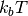
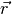
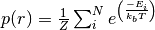
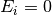
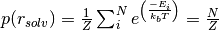
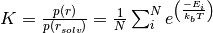
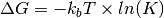

calculate_partition_function — YYYYYYY¶
This module provides YYYYY.
Module Syntax¶
Empty.
Module Contents¶
- calculate_partition_function.calculate_interaction_energy(pdb_path, ligand_path, mesh_size, number_of_rotations=150, Temperature=310., extend=None, ph=None, use_pdb2pqr=True, cubic_box=True, center_pdb=False, box_center=[0, 0, 0], box_dim=None, box_type=["esp", "vdw"], write_top_hits=False, explicit_sampling=False, zipped=False)¶
This function calculates the difference in Gibbs free energy in units of .
Probability of all states at position :
Probability of all states at position in solution (with  for all rotations):
Dissociation constant:
Gibbs free energy:
Parameters: - pdb_path – path to the fixed pdb file
- ligand_path – path to the .pqr file of the ligand. the .pdb file has to be in the same folder
- mesh_size – grid mesh size in all three dimensions [mx,my,mz]
- number_of_rotations – how many different orientations for the ligand?
- Temperature – temperature for the electrostatic potential calculations
- extend – extend the box dimensions by this factor
- ph – can be used to calculate the pqr for a specific pH, default is None
- use_pdb2pqr – use pdb2pqr to calculate the pqr of pdb_path, if False a pqr with the same name, but ending with ‘.pqr’ has to be in the same folder
- cubic_box – cubic box or not, hence True or False
- center_pdb – if True the pdb will be centered at box_center, default is False
- box_center – center of the apbs calculations, default is [0,0,0]
- box_dim – dimension of the box, default is None and it is calculated automatically
- box_type – types of boxes APBS should write to disk. We need at least
[“esp”,”vdw”], “smol” is optional
 [“esp”,”vdw”,”smol”]
[“esp”,”vdw”,”smol”] - write_top_hits – write the top scoring conformations
- explicit_sampling – if True it does not use FFT correlation for the detection of overlapping orienations. This option does not work with write_top_hits. Default is False
- zipped – if True all dxboxes will be gzipped, else the energy matrix and the energy matrix with the LAS surface are not zipped. Default is False
Returns: the energy